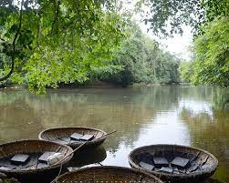
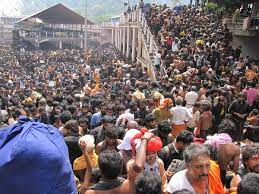
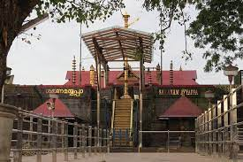
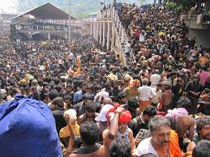
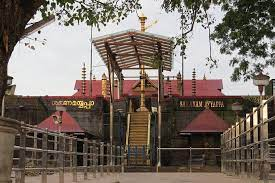

Pathanamthitta, is a municipality situated in the Southern Kerala, India, spread over an area of 23.50 km². It is the administrative capital of Pathanamthitta district. The town has a population of 37,538.
The Sabarimala Sree Ayyappan Temple is a Hindu temple that is devoted to the worship of a deity named Ayyappan, also known as Dharma Shasta. Ayyappan is believed to be the son of Shiva and Vishnu. Wikipedia
District: Pathanamthitta
Completed: 11th century; the temple site is older
Creator: As per tradition Vishwakarma, Pandhalam King Rajasekhara, (sculptor) is believed to be Parashurama
Deity: Ayyappan
Elevation: 1,260 m (4,134 ft)
Governing body: Travancore Devaswom Board
Location: Sabarimala
The road leading to Gavi is blanketed by tea plantations, which itself is a refreshing experience. En route to Gavi are places of interest like Mundakayyam, Kuttikanam, Peermedu and Vandiperiyar from where the road deviates to Gavi.
Once you reach Gavi the serene eco-lodge 'Green Mansion' awaits you like a mother to embrace you in its protective fold. From the 'Green Mansion', one can savour the spectacular view of the Gavi Lake and the adjoining forests. Besides the accommodation provided in 'Green Mansion' visitors can also try out the tree houses here and can even pitch tents in the wilderness. Here one can have outstanding trekking experiences, which are overseen by trained local people. Those who would love to be left alone can do so in the tranquil environs of Gavi or may even go canoeing in the placid waters of the lake or enjoy a breathtaking sunset. Visitors are usually provided vegetarian food and snacks, which further adds to the eco-friendly ambience of the place.
 


